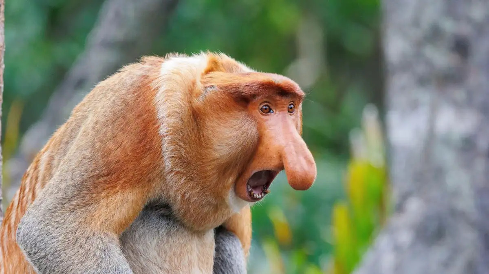

About Proboscis Monkeys
The proboscis monkey or long-nosed monkey is an arboreal Old World monkey with an unusually large nose, a reddish-brown skin color and a long tail. It is endemic to the southeast Asian island of Borneo and is found mostly in mangrove forests and on the coastal areas of the island.
Proboscis Monkey Yelling
Gibbon's Characteristics
- They're loud
- They're social
- They have big noses
- They can be fearful at times